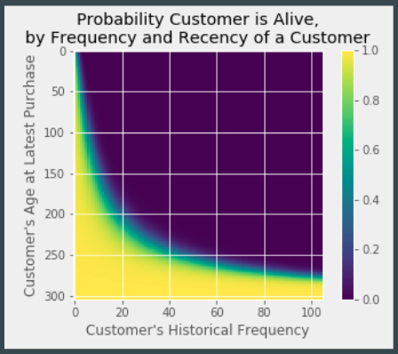

Project: Analysis on Customer Lifetime Value
click here for detail

Background: A question is often asked when I was helping the marketing team developing stategy, which is HOW MUCH CAN I VALUE A CUSTOMER. The amount customer brought in the past does not imply they will have the exact the same in the future. We need to know when will they buy and how much they will buy.
Project Content: An ensemble probabilistic model(CLTV) could handle this problem very well which not only able to predict how much a customer will buy in the any future periods but also the probability he or she will buy in a time range. Also, by comparing with classical machine learning methods, random forest, OLS and SVM, the CLTV model has the best performance in prediction RMSE.
Tools: Python(PySpark, Lifetime, SKlearn-linear regression, random forest, support vector machine), Spark, SQL
Project: Local tracker of COVID 19
click here for detail

Background: The movotivation of this local COVID19 tracker came from early March 2020 the situation people kept ignoring the threat of the coronavirus. I, as data scientist, believe I should remind people how COVID19 was kept growing rapidly.
Project Content: Web-scraped the lastest figures from daily press releases of LA pubilc health department. After that, I created an interactive map showing the density and trend of local communities. By the local community map, I want to provide revalent information and wake people from getting numb with the large numbers.
Tools: Python(BeatifulSoup, Folium, Altair), AWS EC2